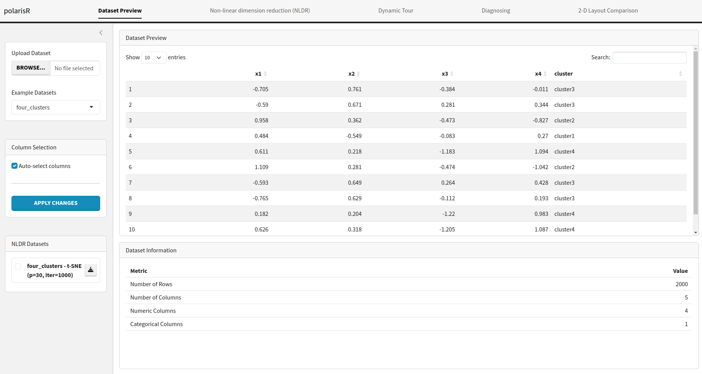
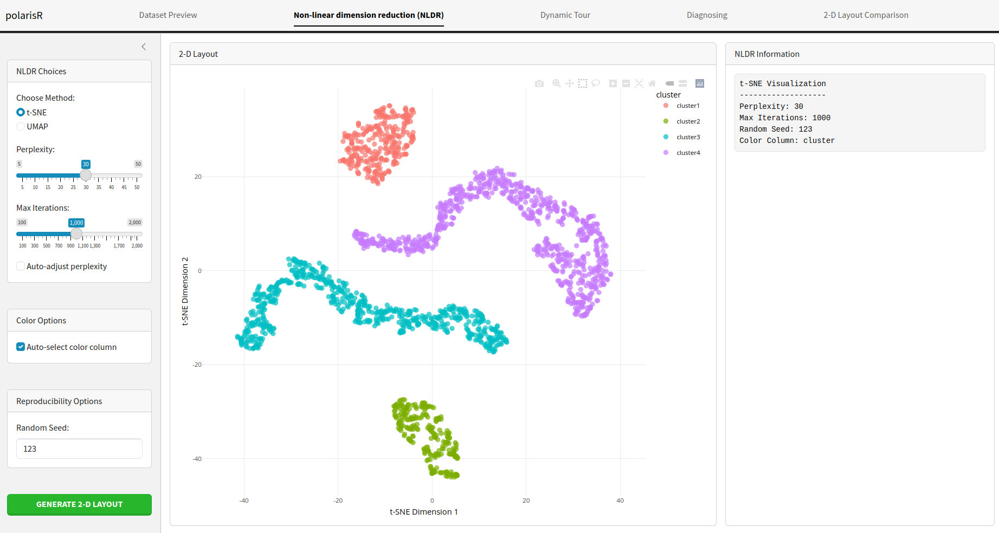
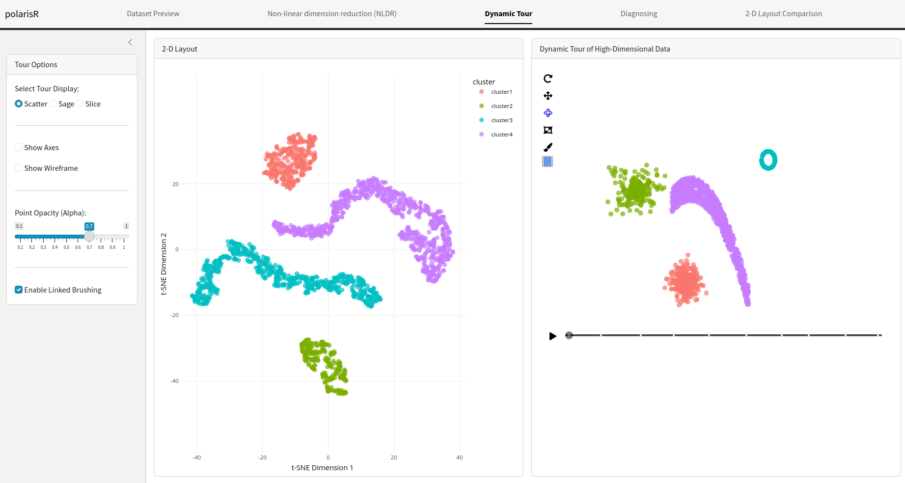
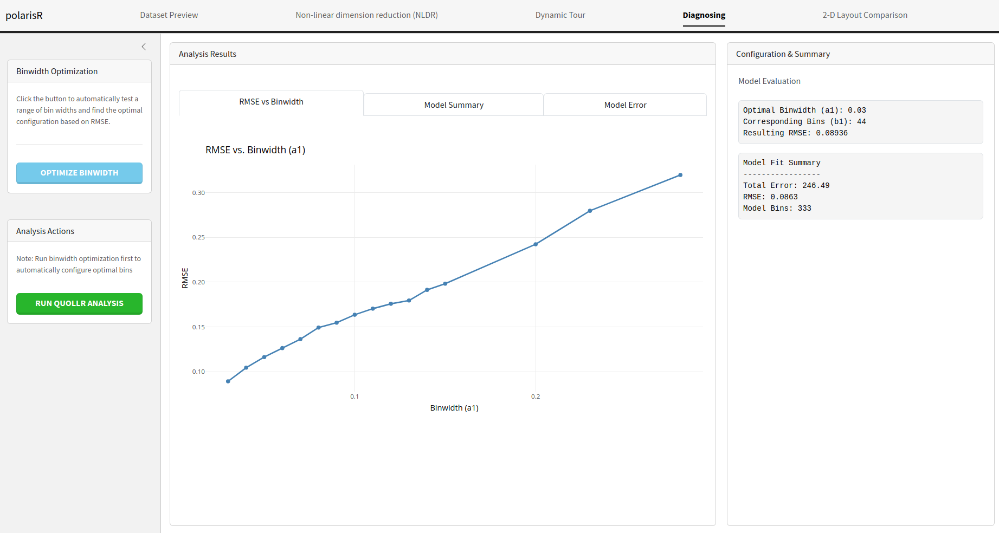
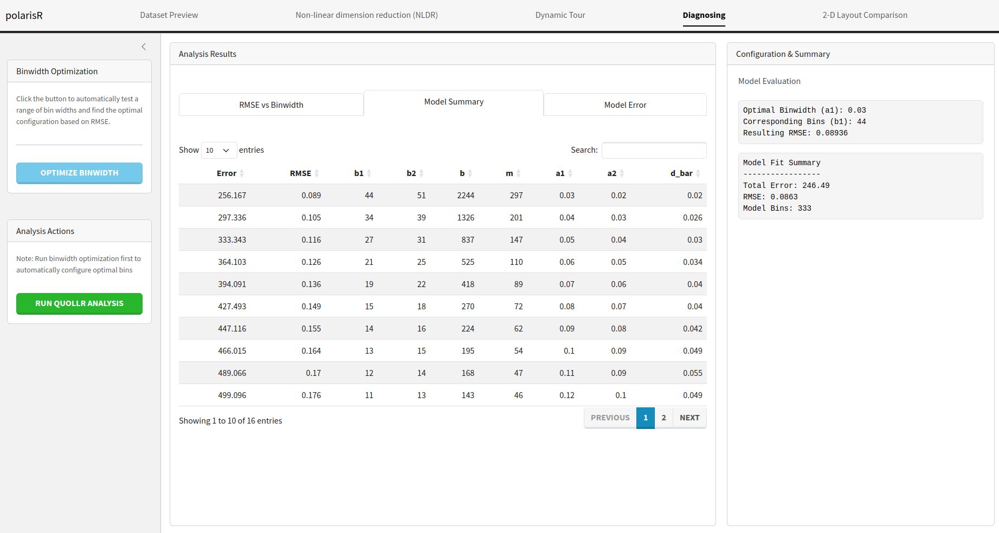
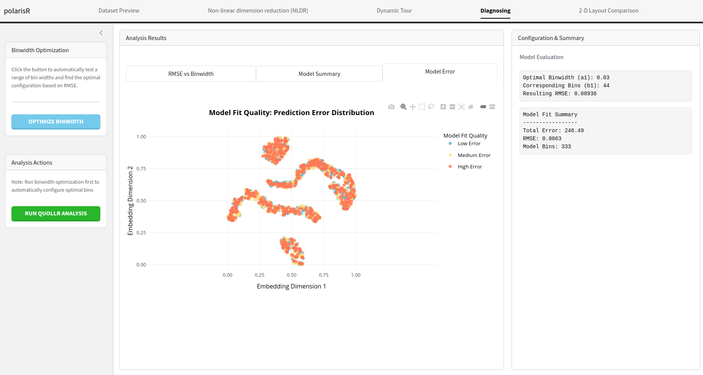
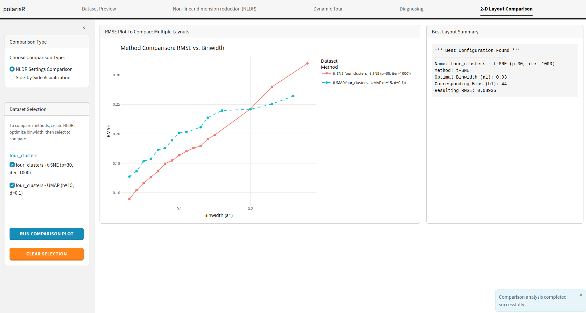
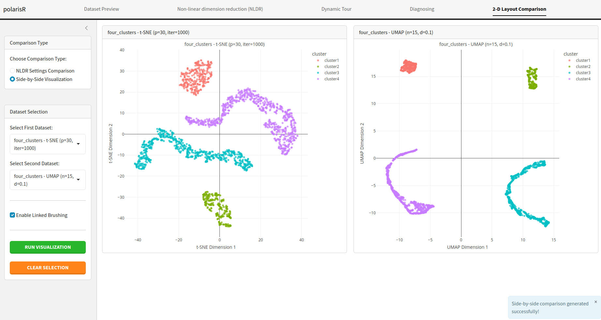
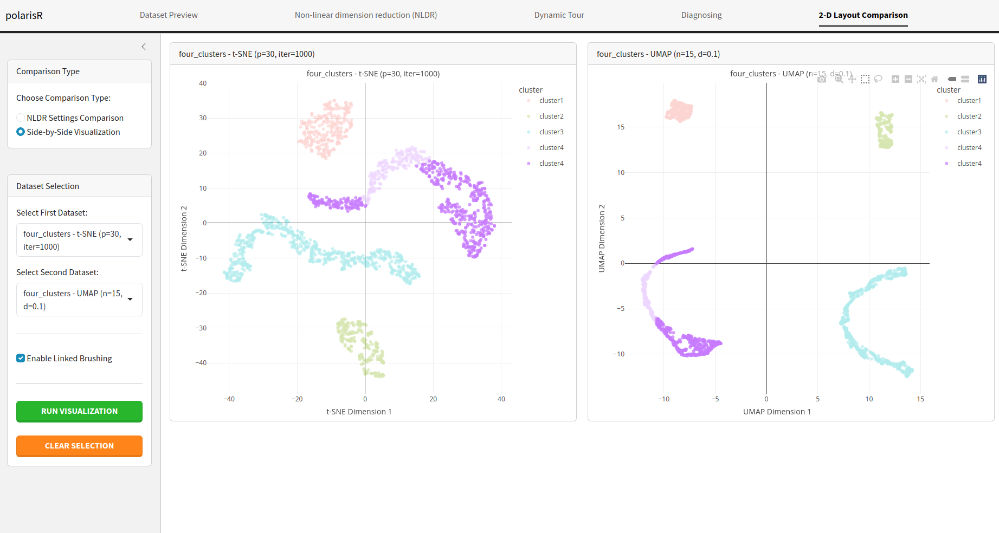

Introduction
Welcome to the polarisR vignette. This document provides
a comprehensive guide to using the polarisR interactive
application for non-linear dimension reduction (NLDR) analysis. We will
walk through each tab of the application, explaining the features and
functionalities available to help you explore and understand your
high-dimensional data.
What does polarisR stand for?
projective output layouts and reduced interactive surfaces in R
Installation and Setup
You can install polarisR from GitHub using:
# Install pak if you haven't already
# install.packages("pak")
pak::pak("Divendra2006/polarisR")Alternatively, using devtools:
# Install devtools if you haven't already
# install.packages("devtools")
devtools::install_github("Divendra2006/polarisR")Getting Started
To launch the polarisR application:
This will open the interactive Shiny application in your default web browser.
Application Overview
The polarisR interface is organized into five main tabs, each designed for specific aspects of your data analysis workflow:
- Dataset Preview - Load and explore your data, select columns, and manage datasets
- Non-linear dimension reduction (NLDR) - Apply NLDR methods (t-SNE/UMAP) with parameter configuration and visualization
-
Dynamic Tour - Explore high-dimensional structure
through animated projections
- Diagnosing - Assess embedding quality using quantitative methods
- 2-D Layout Comparison - Compare different NLDR configurations and results
Each tab builds upon the previous ones, creating a comprehensive workflow from data loading to advanced comparative analysis. Let’s explore each tab in detail.
Dataset Preview Tab
The Dataset Preview tab is the starting point of your analysis. Here, you can load your data, select relevant columns, and get a quick overview of your dataset.

Features:
- Upload Dataset: You can upload your own dataset in CSV format using the “Upload Dataset” button. The application will automatically validate the file and handle potential errors.
-
Example Datasets:
polarisRcomes with three pre-loaded datasets:four_clusters,pdfsense, andtrees. You can select any of these to explore the application’s features without needing your own data.
# Access the datasets directly
data(four_clusters, package = "polarisR")
data(pdfsense, package = "polarisR")
data(fake_trees, package = "polarisR")
# View dataset information
?four_clusters
?pdfsense
?fake_treesDataset Descriptions:
- four_clusters: A synthetic dataset with four distinct clusters, perfect for testing clustering visualization
- pdfsense: A high-energy physics dataset representing parton distribution function fits
- fake_trees: A high-dimensional tree data structure with 10 branching points
Additional Features:
- Column Selection: After loading a dataset, you can choose which columns to include in the NLDR analysis. By default, all columns are selected. You can manually select or deselect columns and apply the changes.
- Data Preview: A table displays the first few rows of your dataset, allowing you to inspect the data and ensure it has been loaded correctly.
- Dataset Information: This section provides a summary of your dataset, including the number of rows, columns, and the types of columns (numeric or categorical).
- NLDR Datasets: As you run different NLDR analyses, the results will be stored and listed here. You can easily switch between different results to compare them.
Non-linear dimension reduction (NLDR) Tab
The Non-linear dimension reduction (NLDR) tab is where the main NLDR analysis happens. You can choose between t-SNE and UMAP, configure their parameters, and visualize the results.

Features:
-
Choose Method: Select either
t-SNEorUMAPas your NLDR method. -
t-SNE Parameters:
- Perplexity: Adjust the perplexity value, which influences the number of nearest neighbors for each point.
- Max Iterations: Set the maximum number of iterations for the t-SNE algorithm.
- Auto-adjust perplexity: Let the application automatically choose a suitable perplexity value based on your data.
-
UMAP Parameters:
- Number of Neighbors: Control the size of the local neighborhood UMAP will use.
- Min. Distance: Set the minimum distance between embedded points.
- Color Options: Choose a column from your dataset to color the points in the visualization. This is useful for identifying clusters or patterns.
- Reproducibility Options: Set a random seed to ensure that your NLDR results are reproducible.
- Run Visualization: Click this button to start the NLDR computation. The progress will be displayed, and the resulting visualization will be shown on the right.
- Visualization Information: This panel displays the parameters used for the current visualization, making it easy to track your experiments.
Dynamic Tour Tab
The Dynamic Tour tab offers an interactive way to explore the high-dimensional space of your data. It provides a dynamic projection of the data, which can be viewed as a scatter plot, sage plot, or slice plot.

Features:
-
Select Tour Display: Choose from three types of
dynamic tours:
- Scatter: A standard scatter plot of the projected data.
- Sage: A scatter plot display that adjusts for the projected volume, defined in Laa et al. (2021).
- Slice: A scatter plot display that highlights points close to the projection plane, defined in Laa et al. (2020).
-
Tour Options:
- Show Axes: Toggle the visibility of the axes in the tour plot.
- Show Wireframe: Toggle the visibility of wireframe edges in the tour plot for enhanced structural visualization.
- Point Opacity (Alpha): Adjust the transparency of the points.
- Gamma (for Sage): Control the effective dimensionality parameter for the sage plot.
- Slice Relative Volume (for Slice): Adjust the thickness of the slice.
- Enable Linked Brushing: When enabled, you can select points in the NLDR plot, and the corresponding points will be highlighted in the dynamic tour plot, and vice-versa. This is a powerful feature for exploring the relationship between the low-dimensional embedding and the original high-dimensional data.
Diagnosing Tab
The Diagnosing tab provides tools to assess the
quality of your NLDR embedding. It uses the quollr package
to perform a quantitative analysis of the embedding and helps you find
the optimal parameters for your visualization.
Features:
-
Binwidth Optimization: This feature automatically
tests a range of bin widths for the
quollranalysis and finds the optimal configuration based on the Root Mean Square Error (RMSE). -
Run Quollr Analysis: After optimizing the binwidth,
you can run the full
quollranalysis to get a detailed assessment of your embedding. -
Analysis Results: The results of the analysis are
presented in several tabs:
- RMSE vs Binwidth: An interactive plot showing the RMSE for different binwidth values. 
- Model Summary: A table with the detailed results of the binwidth optimization. 
- Model Error: A visualization that shows the quality of the model fit, highlighting areas of high and low prediction error. 
-
Configuration & Summary: This section displays
the optimal binwidth configuration and a summary of the
quollrmodel fit.
2-D Layout Comparison Tab
The 2-D Layout Comparison tab allows you to compare the results of different NLDR analyses. You can compare different methods (t-SNE vs. UMAP) or the same method with different parameters.
Features:
-
Choose Comparison Type:
- NLDR Settings Comparison: Compare the RMSE of different NLDR configurations. This is useful for finding the best method and parameters for your data. 
- Side-by-Side Visualization: Display two NLDR plots next to each other for a direct visual comparison. 
- Enable Linked Brushing: In the side-by-side visualization mode, you can enable linked brushing to select points in one plot and see the corresponding points highlighted in the other. 
- Dataset Selection: Select the NLDR results you want to compare from the list of stored results.
- Run Comparison Plot: Generate the comparison plot based on your selection.
- Best Configuration Summary: When comparing NLDR settings, this section will show you the best configuration found based on the RMSE.
Technical Requirements
- R Version: R >= 4.1.0
- Key Dependencies: shiny, plotly, DT, quollr, Rtsne, umap
- Browser: Modern web browser with JavaScript enabled
- Memory: Sufficient RAM for your dataset size (recommend 4GB+ for large datasets)
Support
For questions, bug reports, or feature requests, please visit:
- GitHub Repository: https://github.com/Divendra2006/polarisR
- Issues: https://github.com/Divendra2006/polarisR/issues